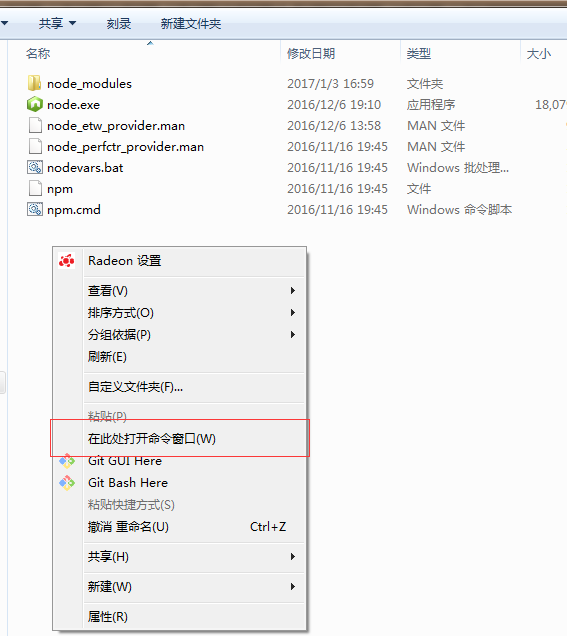
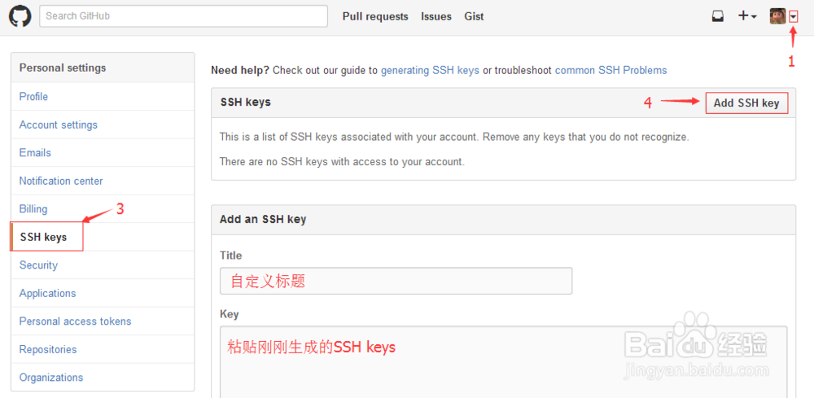

博客 作为web2.0的重要产物，是个人对外展示的快速平台，而博客也可以作为对自己生活、学习的记录。俗话说，“好记性不如烂笔头”，笔记对于程序开发这一日新月异、更迭迅速的行业来说更是显得尤为重要，好的笔记习惯不仅可以帮助我们及时review、整理开发过程中学到的东西，还能通过它与他人交流开发中获得的经验、踩过的坑，帮助自己发现错误与不足，及时改进、更新。下面就让我们用hexo+github搭建我们自己的博客。
简介
github
GitHub 是一个面向开源及私有软件项目的托管平台，因为只支持 Git 作为唯一的版本库格式进行托管，故名 GitHub。——百度百科
Hexo
A fast, simple & powerful blog framework, powered by Node.js. ——Hexo官方文档
Markdown
Markdown是一种可以使用普通文本编辑器编写的标记语言，通过简单的标记语法，它可以使普通文本内容具有一定的格式。 —— 维基百科
Markdown使用语法规则请阅读：Markdown语法说明文档
好用的在线Markdown文本编辑器：马克飞象
环境配置
ubuntu下环境配置
安装nvm
第一种方式，直接使用curl安装：
使用快捷键Ctrl + Alt + T打开命令行工具，输入命令：
第二种方式：
从 github clone nvm 到本地, 这里假设大家都使用 ~/git 目录存放 git 项目:
配置终端启动时自动执行 source ~/git/nvm/nvm.sh,
在 ~/.bashrc, ~/.bash_profile, ~/.profile, 或者 ~/.zshrc 文件添加以下命令:
重新打开你的终端, 输入 nvm
使用nvm安装node
关闭并重新打开命令行工具，输入命令：
等待安装完成，查看安装是否成功
显示版本号则安装成功
####安装npm包管理器
ubuntu下可以直接使用apt-get包管理器安装npm，需要注意命令权限和安装前先更新源。
打开命令行，更新apt-get,安装npm
安装hexo
使用npm全局安装hexo
初始化hexo
注意：此处init后接此项目存放路径，此处我将项目存放在用户home的Documents文件夹下的blog中，可根据自己需要修改路径。
进入项目路径下，右键打开命令行工具。或者直接在命令行中键入
构建hexo
运行本地服务器查看项目
此处命令可能报错，提示server命令无法找到，原因是在Hexo 3.0 后server被单独出来了，需要安装server，不用怕，只需要输入命令:
安装成功，再次输入命令运行本地server，会看到如下提示：
此时，打开浏览器，在网址栏键入localhost:4000就能看到初始化的博客页面了。
windows下环境配置
安装node
进入Nodejs中文网或Nodejs官网下载node安装包，下载完成后打开，直接点击下一步进行傻瓜式安装。
安装完毕，打开命令行窗口，使用-v命令查看是否安装成功
安装npm
打开nodejs安装目录，在根目录文件夹空白处按下Shift + 鼠标右键打开右键菜单，找到“在此处打开命令窗口”

在命令窗口输入命令：
安装完毕，使用-v查看是否安装成功
安装git
进入git官网下载客户端安装文件，下载完成后直接点击“下一步”安装。
安装完成，打开命令行
查看是否安装成功
安装hexo
全局安装hexo：
打开命令行，输入：1$ npm install -g hexo初始化hexo项目
打开需要将hexo项目存放的目录，例如我存放在的D盘下的workspace文件夹。在此文件夹下创建一个新文件夹下，可取名为“blog”，进入blog文件夹，Shift + 鼠标右键在此处打开命令行窗口，输入指令：
等待安装完成
安装项目依赖包
1$ npm install构建页面并运行hexo本地服务，查看是否安装正确
12$ hexo clean$ hexo generate
等待构建完成后，运行本地服务
出现以下提示则服务启动成功，可打开浏览器并输入localhost:4000查看原始博客页面
注：由于在Hexo 3.0 后server被单独出来了，所以若server命令报错或无反应，可通过命令安装server模块：
配置github并接通hexo
- 建立Repository
创建github账号，并建立与你用户名对应的仓库，仓库名必须为【your_user_name.github.io】，固定写法 - 配置ssh
使用git提交和下载代码时总共有两种协议，https和ssh。此处我是用的是ssh，也可根据个人偏好使用https。
使用ssh协议时的配置如下：
2.1. 检查本机是否有ssh key设置
右键打开git bash
如果没有则提示：No such file or directory
没有则进入~/.ssh路径下
2.2. 使用git bash生成新的ssh key
本机已完成ssh key设置，其存放路径为：c:/Users/xxxx_000/.ssh/下。
2.3. 添加ssh key到github
a. 登录GitHub系统；点击右上角账号头像的“▼”→Settings→SSH kyes→Add SSH key。
b. 进入c:/Users/xxxx_000/.ssh/目录下，打开id_rsa.pub文件，全选复制公钥内容。
c. Title自定义，将公钥粘贴到GitHub中Add an SSH key的key输入框，最后“Add Key”。

d. 测试ssh keys是否设置成功。
- 配置hexo
找到博客根目录下的_config.yml文件，用记事本打开，并将最后几行改成1234deploy:type: gitrepo: git@github.com:tjlnotes/tjlnotes.github.io.gitbranch: master
注意，repo后接自己的github仓库地址（在建立完仓库后可从个人的repository查看到）。
如果使用的是ssh协议，此处填ssh地址，如果使用https协议此处就填https地址。
安装hexo-deployer-git模块
此目录下打开命令行键入1$ npm install hexo-deployer-git --save重新构建页面并发布到github上
12345678$ hexo clean$ hexo generate$ hexo deployBranch master set up to track remote branch master from git@github.com:tjlnotes/tjlnotes.github.io.git.To github.com:tjlnotes/tjlnotes.github.io.git+ cd219d1...d275f0d HEAD -> master (forced update)INFO Deploy done: git
发布成功，就可以打开个人主页查看效果了http://yourgithubname.github.io
每次编辑博客后都由这三个命令进行构建和发布